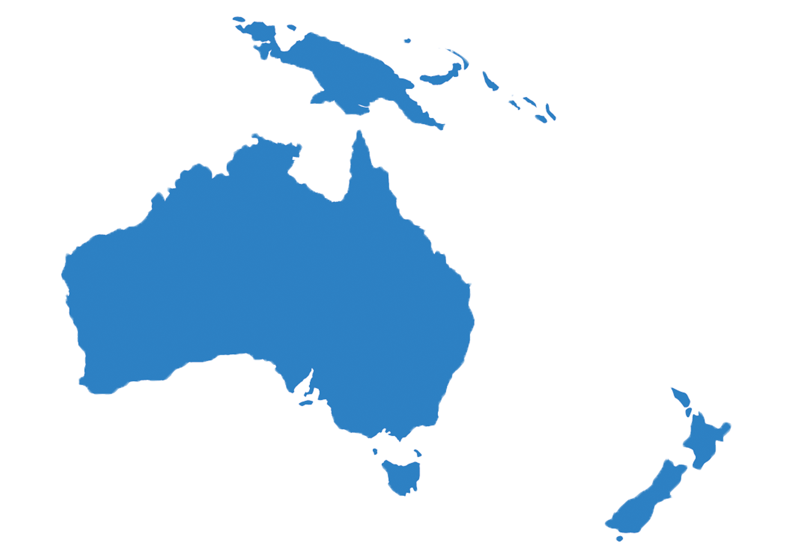

Oceania
Países
Possui 14 países, sendo que a Austrália e a Nova Zelândia apresentam grande destaque no cenário internacional. As outras 12 nações são: Fiji, Ilhas Marshall, Ilhas Salomão, Kiribati, Micronésia, Nauru, Palau, Papua Nova Guiné, Samoa, Tonga, Tuvalu e Vanuatu.
Economia
As ilhas da Oceania, salvo Nova Zelândia, possuem uma economia subdesenvolvida, devido a fatores naturais, isolamento dos principais mercados, diminuto território, e fatores humanos, como a superpopulação e falta de mão de obra qualificada. O turismo é a principal fonte de renda das ilhas, mas a pesca e extração de produtos primários também têm relevância. A agricultura é praticada em pequenas unidades familiares, com raros latifúndios nas ilhas maiores. As principais exportações agrícolas são coco e derivados, além de cacau, especiarias e cana-de-açúcar.
Cultura
Na Oceania, o inglês é o idioma mais falado, mas essa não é a única língua do continente. Lá também há espaço para língua francesa e para os dialetos nativos. Em termos religiosos, predomina o cristianismo, sendo liderado por 27% de católicos e 24% de protestantes. Em decorrência do calor, é costume usar roupas leves e confortáveis. As típicas tatuagens maoris são conhecidas em todo o mundo e têm origem com os povos indígenas da Nova Zelândia. Para os índios, as mokas - como são chamadas - tem caráter sagrado.
Política
O executivo, em contrapartida, coincide com o Conselho Executivo Federal, comandado pelo governador-geral e com supervisão do primeiro-ministro e de ministros do Estado. Sistema bastante regular em nações integrantes da Commonwealth, o Conselho Executivo está em todos os estados australianos, de onde o governador da região exerce poder. O primeiro-ministro é, normalmente, indicado pelo governador-geral, mas tem mais êxito o partido com maior apoio da Câmara dos Representantes.
Geografia
A Oceania é o menor continente do mundo, com superfície de aproximadamente 8,5 milhões de km². Somente a Austrália responde por 89,8% dessa área, enquanto o território neozelandês, segundo mais extenso, corresponde a 3,1% da área continental. É composta por um conjunto de países insulares e territórios ultramarinos que são parte de outros Estados não pertencentes ao continente, como França e Estados Unidos, e também de países oceânicos, que é o caso das ilhas que integram a Austrália e a Nova Zelândia.
Curiosidades
- O ponto mais elevado da Oceania fica na Papua Nova Guiné. Trata-se do monte Wilhelm, a 4409 metros acima do nível do mar.
- O ponto mais elevado da Oceania fica na Papua Nova Guiné. Trata-se do monte Wilhelm, a 4409 metros acima do nível do mar.
- Os países da Oceania não estabelecem fronteiras terrestres entre si.
- Algumas das ilhas da Oceania correspondem a formações conhecidas como atóis